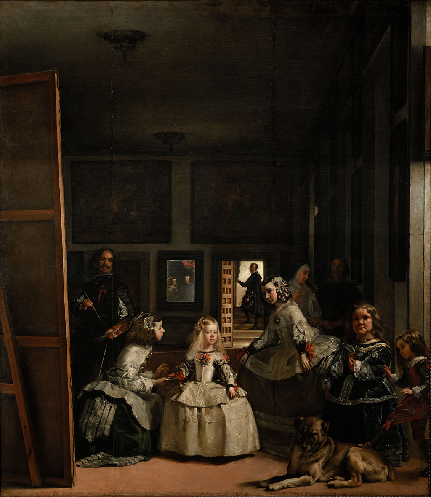

<head>
<meta charset="UTF-8" />
<meta name="keywords" content="drawing, painting" />
<meta name="description" content="drawings by Sunjy" />
<title>Sunjy</title>
<link rel="shortcut icon" type="image/x-icon" href="../../mImages/mCommon/favicon.ico" media="screen" />
<link rel="stylesheet" type="text/css" href="../../mCsses/mCommon/mCssA.css" />
<link rel="stylesheet" type="text/css" href="../../mCsses/mCommon/mCssB.css" />
<link rel="stylesheet" type="text/css" href="../../mCsses/mCommon/mCssC.css" />
<link rel="stylesheet" type="text/css" href="../../mCsses/mCommon/mCssD.css" />
<link rel="stylesheet" type="text/css" href="../../mCsses/mContent/mCssA.css" />
<link rel="stylesheet" type="text/css" href="../../mCsses/mContent/mCssB.css" />
<link rel="stylesheet" type="text/css" href="../../mCsses/mContent/mCssC.css" />
<link rel="stylesheet" type="text/css" href="../../mCsses/mContent/mCssD.css" />
</head>
<script type="text/javascript" src="../../mScripts/mContent/mContentAA.js" /></script>
<script type="text/javascript" src="../../mScripts/mContent/mContentAB.js" /></script>
<script type="text/javascript" src="../../mScripts/mContent/mContentAC.js" /></script>
<script type="text/javascript" src="../../mScripts/mContent/mContentAD.js" /></script>
<script type="text/javascript"></script> 
<script type="text/javascript">
document.write('<div class="mImgAbsolute"></div>');
/*
document.write('<p class="mFontSizeBColor" />From a white paper...</p>');
document.write('<table class="center"><tr><td>');
document.write('');
document.write('</td></tr></table>');
*/
</script>


<script type="text/javascript">
document.write('<p class="mFontSizeBColor" />The Ladies-in-Waiting </p>');
document.write('<p class="mFontSizeSColor" />“Las Meninas” or “The Ladies-in-Waiting” by Diego Velázquez is a complex and mysterious composition which, when studied, creates an ambiguous relationship between the audience and the various subjects in this painting.<br><br>The complex arrangement of Las Meninas has made this painting one of the most analyzed masterpieces in Western art.<br><br>“Las Meninas” depicts a room in The Royal Alcázar of Madrid. It was a fortress located at the site of today’s Royal Palace of Madrid, during the reign of King Philip IV of Spain.<br><br>The figures in the painting are all real historical members of the Spanish court.<br><br>The young Infanta Margaret Theresa is in the center of her entourage of maids of honor, chaperone, bodyguard, two dwarfs, and a dog. <br><br>Infanta was the title for the daughter of the ruling monarch of Spain, especially the eldest daughter, who was not heir to the throne.<br><br>To the left, Velázquez, the artist of this masterpiece, portrays himself working on a large canvas and looks outwards, towards us.<br><br>Just behind Infanta on the left, there is a mirror that reflects the king and queen. Is it reflections of the king and queen observing this scene?<br><br>Or is it a representation of Velázquez’s painting that we can not be seen. To the rear through the door stands the queen’s chamberlain and head of the royal tapestry works.<br><br>Perspective is the secret to this masterpiece. It creates a feeling of depth. The use of light also creates different focal points as well as adding definition to the subjects.<br><br>Las Meninas has long been recognized as one of the most important paintings in Western art history. Many famous artists have studied this painting and referenced it.<br><br>In 1957, Pablo Picasso painted a series of 58 interpretations of Las Meninas, which currently fills the Las Meninas room of the Museu Picasso in Barcelona, Spain.<br><br>Amongst the many famous artists who have referenced this masterpiece are Francisco Goya, John Singer Sargent, and Salvador Dalí.<br></p>');
document.write('<table class="center" /><tr><td>');
document.write('<br>The complex arrangement of Las Meninas has made this painting one of the most analyzed masterpieces in Western art.<br><br>“Las Meninas” depicts a room in The Royal Alcázar of Madrid. It was a fortress located at the site of today’s Royal Palace of Madrid, during the reign of King Philip IV of Spain.<br><br>The figures in the painting are all real historical members of the Spanish court.<br><br>The young Infanta Margaret Theresa is in the center of her entourage of maids of honor, chaperone, bodyguard, two dwarfs, and a dog. <br><br>Infanta was the title for the daughter of the ruling monarch of Spain, especially the eldest daughter, who was not heir to the throne.<br><br>To the left, Velázquez, the artist of this masterpiece, portrays himself working on a large canvas and looks outwards, towards us.<br><br>Just behind Infanta on the left, there is a mirror that reflects the king and queen. Is it reflections of the king and queen observing this scene?<br><br>Or is it a representation of Velázquez’s painting that we can not be seen. To the rear through the door stands the queen’s chamberlain and head of the royal tapestry works.<br><br>Perspective is the secret to this masterpiece. It creates a feeling of depth. The use of light also creates different focal points as well as adding definition to the subjects.<br><br>Las Meninas has long been recognized as one of the most important paintings in Western art history. Many famous artists have studied this painting and referenced it.<br><br>In 1957, Pablo Picasso painted a series of 58 interpretations of Las Meninas, which currently fills the Las Meninas room of the Museu Picasso in Barcelona, Spain.<br><br>Amongst the many famous artists who have referenced this masterpiece are Francisco Goya, John Singer Sargent, and Salvador Dalí.<br>" />');
document.write('</td></tr></table>');
</script>


